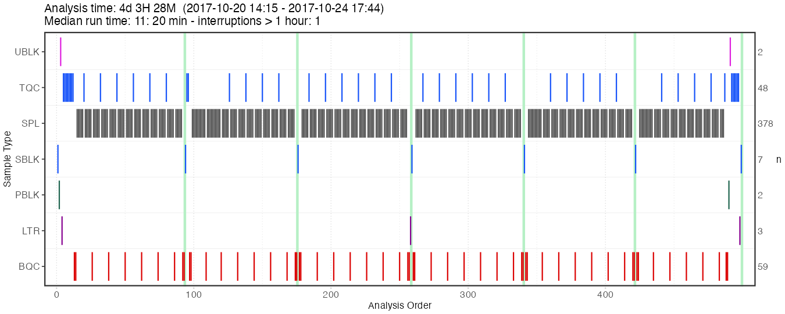

MRMhub
Turn targeted MRM data into quality-controlled, quantified results — reproducibly.
MRMhub takes targeted Multiple Reaction Monitoring (MRM) mass spectrometry — the assay behind quantitative lipidomics and metabolomics — from instrument data to a clean, quantitative report: peak integration, QC, normalisation, drift and batch correction, calibration, and reporting.

Run a complete analysis on bundled demo data — no files of your own required, and no raw-versus-integrated decision to make first.
Run your first analysis (5 min) →
Prefer point-and-click? The run_walkthrough() app walks you through the same steps (one-time install.packages(c("shiny", "bslib"))). New to the terminology (BQC, TQC, ISTD, drift)? See the Key Concepts & Glossary ↗.
What you get
- Quality-controlled. Per-feature QC metrics with RunScatter, PCA, and RLA diagnostics, plus rule-based filtering that flags unreliable results before they reach your report.
- Quantified. Absolute or relative concentrations by internal standard or by external calibration curve.
- Reproducible. Every step is code — INTEGRATOR parameter files and QUANT R scripts — so an analysis can be re-run, audited, and shared without a click-trail.
The two tools
Most analyses start from integrated peaks, so QUANT is the usual starting point; INTEGRATOR is only needed when you begin from raw instrument files.
- QUANT (the
mrmhubR package) ↗ — the post-processing pipeline. Start here if you already have integrated peaks — from INTEGRATOR, Agilent MassHunter, Skyline, or a CSV / mzTab export. - INTEGRATOR ↗ — the stand-alone peak-detection and integration app. Start here first only when you have raw vendor files.
Starting from raw vendor files?
If you have .raw, .d, or .wiff files and need integrated peaks, run INTEGRATOR first, then continue in QUANT. For a fuller comparison, see INTEGRATOR vs QUANT ↗.
| Available input | Where to start |
|---|---|
| Integrated peaks (INTEGRATOR, MassHunter, Skyline, mzTab/CSV) | QUANT install ↗ — the usual path |
Raw vendor files (.raw, .d, .wiff) |
INTEGRATOR Manual ↗ → then QUANT ↗ |
| Peak picking only | INTEGRATOR Manual ↗ |
Citation: Teo et al. (2020). MRMhub: Automated Data Processing for Large-Scale Targeted Metabolomics Analysis. Anal. Chem. 92, 13677–13682. doi:10.1021/acs.analchem.0c03060 | Source: github.com/SLINGhub/MRMhub | Example workflows: mrmhub-workflows ↗